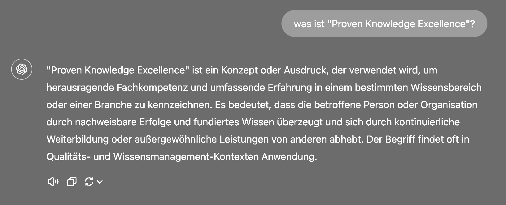
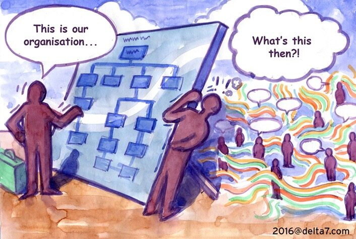
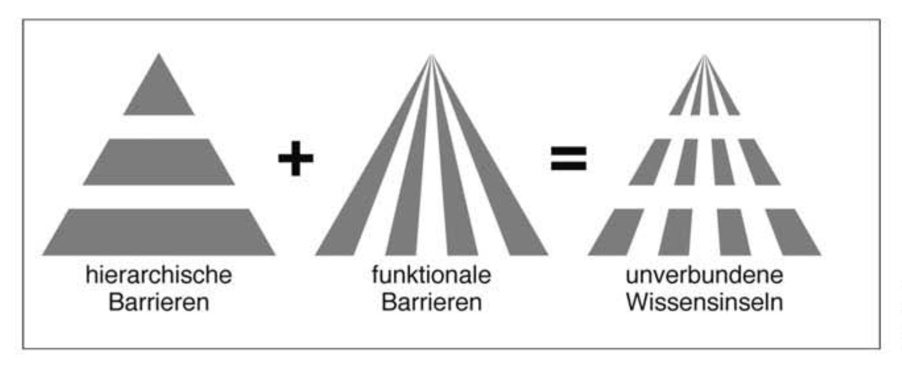
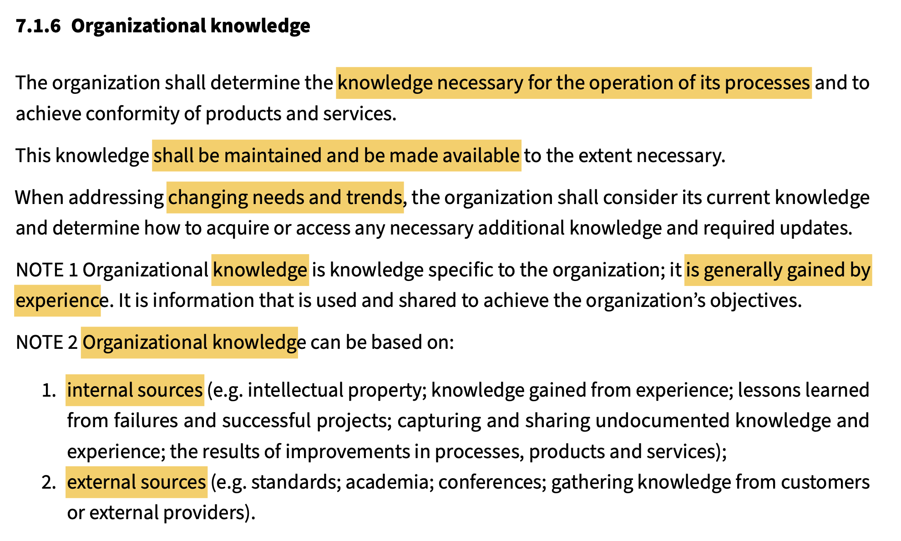
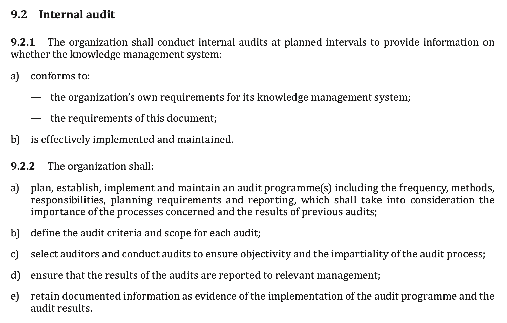

#Wissensmanagement: Future Skills für das 21. Jahrhundert
powered by lernOS für Organisationen
Inhalt
- Definitionen
- Prozesse des Wissensmanagements
- Rollen im Wissensmanagement
- Wissensmanagement etablieren
- Wissensmanagement-Strategie
- Prozess- und Wissensmanagements
- Die drei Ebenen des Wissensmanagements
Definitionen
- Proven: Nachgewiesen durch interne oder externe Evidenz
- Knowledge: Gerechtfertigte, wahre Meinung
- (Business) Excellence: Herausragende Geschäftsleistung
ChatGPT
Struktur
Struktur (1855)

Scientific Management (1911)

Formelle und informelle Organisation
Struktur
Struktur
Strategie
Strategie (1970)

Emergente Strategien (1994)
Struktur
Strategie
Struktur
Strategie
Prozesse
Lernen im Prozess (1959)

ISO 9001 (1987)

Lean Thinking (1988)

Business Excellence (1988)

Struktur
Strategie
Prozesse
Struktur
Strategie
Prozesse
Wissen
Problem: Wissensinseln
Bausteine des Wissensmanagements (1997)

Wissen & Prozesse (2015)
Wissensmanagement Prüfkriterien (2018)
Wissensmanagement Toolbox
- Multiplikatoren-Netzwerk - Thema Wissensmanagement übersetzen und in die Breite tragen
- Wissenslandkarte - Übersicht über relevante Wissensgebiete, ergänzt Organigramm und Prozesslandkarte
- Wissensstrategie - Relevante Wissensgebiete, abgeleitet aus der Geschäftsstrategie
- Wissensportal - Mit wenigen Klicks zu Wissensträgern und relevanten Inhalten
- Wiki - Gemeinsam Wissen dokumentieren und vernetzen
- Expert Debriefing - Wissen bewahren, wenn Expert:innen die Organisation verlassen
- Lessons Learned - Erfahrungswissen aus Aktivitäten bewahren
- Barcamp - Veranstaltungsformat für Wissensteilung und -vernetzung
- Yellow Pages - Expert:innen entlang von Themen sichbar machen und Vernetzung fördern
- Community of Practice - Regelmäßiger Austausch, um voneinander zu lernen
- Persönliches Wissensmanagement - Professioneller Umgang mit dem eigenen Wissen
- Generative KI - Die 24/7 Copiloten für Wissensarbeiter:innen
- uvm.
Hypertextorganisation (Nonaka 1995)


Projektionstyp erzeugt Fehler